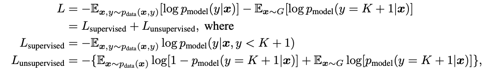

Improved Techniques for Training GANs
by Jung Jaeeun
오늘 리뷰할 논문은 Improved Techniques for Training GANs로, 이 논문은 아래와 같이 크게 세 가지 내용으로 이루어져 있다.
- GAN의 convergence를 위한 휴리스틱한 방법론들
- 사람이 측정한 것과 비슷하게 이미지 퀄리티를 측정하는 방법
- Semi-supervised learning에 GAN을 이용하는 법과 그 중요성
편의상 generator를 G, discriminator를 D라고 칭하겠다.
Toward Convergent GAN Training
Feature Matching
D의 direct output에 맞춰 업데이트되는 G와 다르게 이 논문에서는 새로운 objective를 설정했다. $\mathbf{f(x)}$를 D의 intermediate layer output이라고 했을 때, G의 새로운 목표는 $\vert\vert \mathbb{E_{x \thicksim p_{data}}}\mathbf{f(x)} - \mathbb{E_{z \thicksim p_{z}}}\mathbf{f}(G(z))\vert\vert^{2}$를 최소화하는 것이 된다.(D는 기존의 방식대로 학습됨) 즉, 직접적인 비용이 아니라 D가 기대하는 feature에 G를 맞추는 것이다.
Minibatch discrimination
GAN에서 흔하게 나타나는 현상이 mode collapsing으로 D가 제일 헷갈리는 sample 하나만 G가 생성하는 것이다. 이 논문에서는 이러한 현상을 막기 위해서 D가 여러 샘플을 보게 하는 학습 기법을 minibatch discrimination이라고 칭한다.
구체적인 학습 방법은 이렇다. $\mathbf{f(x_{i})} \in \mathbb{R}^{A}$에 matrix $T \in \mathbb{R}^{A \times B \times C}$를 곱힌 결과를 $M_{i} \in \mathbb{R}^{B \times C}$라고 하자. 이 $M_{i}$의 행들간의 $L$-1 distance를 구하고 그 값에다가 negative exponential을 취한 값을 모두 합해서 학습에 사용한다.
$\sigma(x_{i, b})= \sum_{j=1}^{n} c_{b}(x_{i}, x_{j}) = \sum_{j=1}^{n} \exp(- \vert\vert M_{i, b} - M_{j, b} \vert\vert)\in \mathbb{R}$
$\sigma(x_{i}) = [\sigma(x_{i, 1}), …, \sigma(x_{i, B})] \in \mathbb{R}^{B}$
$\sigma(\mathbb{X}) \in \mathbb{R}^{n \times B}$
$\sigma(\mathbb{x_{i}})$를 $\mathbf{f(x_{i})}$에 concat해서 D의 next layer에 정보를 전달한다. 따라서 D는 현재 판단하는 sample뿐만 아니라 minibatch를 side information으로 사용한다.
Historical averaging
이 기술은 cost에 $\vert\vert \mathbf{\theta} - \frac{1}{t}\sum_{i=1}^{t}\mathbf{\theta}[i]\vert\vert^{2}$ term을 포함하는 것이다. 이렇게 함으로써 online-learning의 효과를 갖게 되고 전에 배웠던 학습 정보를 잃지 않게 된다.
One-sided label smoothing
이 발상은 positive targets 갯수가 $\alpha$개, negative targets 갯수가 $\beta$개 일때 optimal D가 $D(x) = \frac{\alpha p_{data}(x) + \beta p_{model}(x)}{p_{data}(x) + p_{model}(x)}$가 되고 $p_{data}$가 0이고 $p_{model}$이 매우 클 때 G가 제대로 학습이 되지 않는다는 점에서 착안했다. 따라서 positive labels만 $\alpha$, negative labels는 0으로 smoothing 한다.
Virtual batch normalization
DCGAN에서 batch normalization이 GAN의 성능을 크게 향상시킨다고 입증했지만 batch에 따라 성능이 크게 좌우된다. 따라서 학습을 시작할 때 reference batch를 만들어서 reference batch에 collect된 통계량을 통해 정규화를 진행한다.
Assessment of image quality
원래는 GAN의 성능을 측정하기 위해 human anotators를 사용했는데, 이 논문에서는 Inception module 이라는 human evaluation과 correlation이 높은 새로운 대안을 제시한다.
우리는 우리 model이 $p(y \vert x)$는 low entropy를 갖고, $\int p(y \vert x = G(z))dx$가 high entropy를 갖기를 기대한다. 따라서 $\exp (\mathbb{E_{x}} KL(p(y \vert x) \vert\vert p(y)))$를 새로운 metric으로 제시한다. 막상 이 metric을 학습에 사용해서는 큰 효과를 보지 못했지만, human evaluation과 human judgement와 큰 양의 상관관계가 있다고 한다.
Semi-supervised learning
image를 K개의 클래스로 분류하는 classifier를 생각해보자. 이 모델의 마지막 레이어에서는 K-dimensional logit이 아웃풋이 된다. 즉, $[l_{1}, …, l_{K}]$을 통해 $p(y=j \vert x) = \frac{\exp (l_{j})}{\sum_{k=1}^{K} \exp(l_{k})}$를 구한다.
여기서, G가 생성해낸 새로운 클래스를 $K+1$로 명명하고 classifier는 $p_{model}(y=K+1 \vert x)$까지 구분하도록 바뀐다. 이로써 classifier는 unlabeled data(G에 의해 생성된 데이터)까지 활용하여 학습할 수 있다. 새로운 Loss function은 아래처럼 바뀐다.

사실 $L_{unsupervised}$는 G가 그럴듯한 이미지를 생성할 때만 도움이 된다. 이를 강제하는 방식은 D를 classifier로 바꾸고 G, D를 동시에 학습시키는 것이다. 이 방식으로 학습된 G를 통해 생성된 이미지는 human annotators로부터 좋은 평가를 받았다고 한다. 필자들은 본능적으로 사람이 이미지를 보았을 때 특정한 카테고리로 분류한다는 점에서 이런 결과가 나왔다고 설명한다. D로 하여금 objectness를 측정하게 하는 것이다.
위에 열거한 기법들을 통해 필자들은 큰 발전을 이루었다고 말하고 있다. 물론 이 기법들은 대부분 empirical results에 의존하고, 마땅히 이렇다할 이론적 근거들은 없다. 하지만 minibatch discrimination 같은 기법은 GAN 뿐만 아니라 다른 neural network에도 사용될 수 있을 것 같다.
Subscribe via RSS